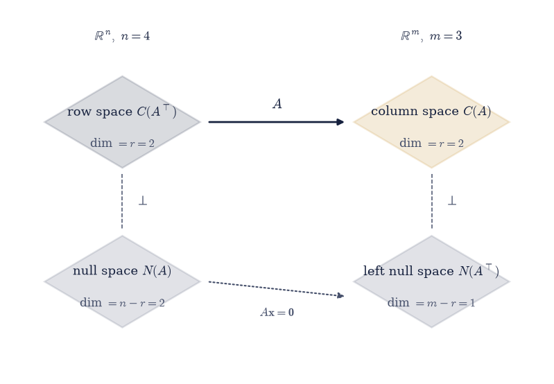
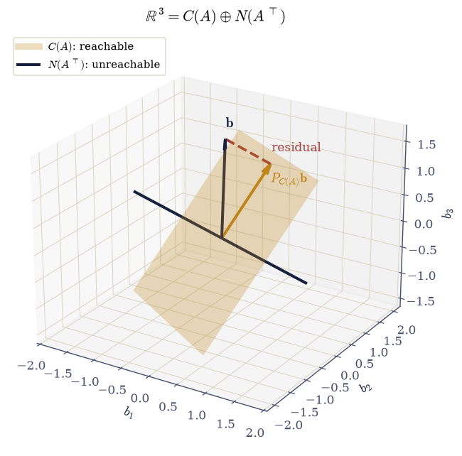

1.4 The Four Fundamental Subspaces#
Notebook overview#
A matrix \(A\) of shape \(m\times n\) carries \(\mathbb{R}^n\) to \(\mathbb{R}^m\), and it does so by dividing each of those spaces cleanly in two.
On the input side, some vectors are annihilated — \(A\mathbf{x} = \mathbf{0}\) — and they form the null space. Everything else is carried somewhere useful, and the vectors that do the carrying form the row space. On the output side, some vectors are reachable, forming the column space, and the rest are not, forming the left null space. Four subspaces. Two of them live in \(\mathbb{R}^n\) and two in \(\mathbb{R}^m\), and in each pair the two are orthogonal complements: perpendicular, and together spanning everything.
That structure answers the questions Chapter I has been circling. When does \(A\mathbf{x} = \mathbf{b}\) have a solution? Exactly when \(\mathbf{b}\) lies in the column space, which — because the column space and left null space are complements — is exactly when \(\mathbf{b}\) is perpendicular to every solution of \(A^{\top}\mathbf{y} = \mathbf{0}\). That reformulation is the Fredholm alternative, and it turns an existence question into an orthogonality test you can run. When is the solution unique? Exactly when the null space is \(\{\mathbf{0}\}\). And what does \(A\) actually do? It throws away the null space and maps the row space one-to-one onto the column space, which is why both have the same dimension \(r\) and why row rank equals column rank — §1.3 proved that from \(A = CR\), and here it becomes geometry.
There is a methodological point running through the notebook. We compute the four subspaces twice, once from the SVD in floating point and once exactly with SymPy, and the two give completely different bases. That is not an error. A subspace does not have a preferred basis, and the SVD is entitled to return any orthonormal one. So every comparison here is made between projectors, which are basis-independent, rather than between basis vectors — the discipline §0.2 Rule 4 insists on.
How to read a check. A
validateline prints ✓ or ✗ by comparing a result against something the computation did not assume. A ✗ flags a mismatch to investigate, never a verdict on its own.
Theory in brief#
The four spaces#
For \(A \in \mathbb{R}^{m\times n}\) of rank \(r\):
subspace |
definition |
lives in |
dimension |
|---|---|---|---|
column space \(C(A)\) |
all \(A\mathbf{x}\) |
\(\mathbb{R}^m\) |
\(r\) |
left null space \(N(A^{\top})\) |
all \(\mathbf{y}\) with \(A^{\top}\mathbf{y} = \mathbf{0}\) |
\(\mathbb{R}^m\) |
\(m - r\) |
row space \(C(A^{\top})\) |
all \(A^{\top}\mathbf{y}\) |
\(\mathbb{R}^n\) |
\(r\) |
null space \(N(A)\) |
all \(\mathbf{x}\) with \(A\mathbf{x} = \mathbf{0}\) |
\(\mathbb{R}^n\) |
\(n - r\) |
The dimension statement for the input side is the rank–nullity theorem,
and the output side says the same about \(m\).
The orthogonality, in one line each#
If \(\mathbf{x} \in N(A)\) then \(A\mathbf{x} = \mathbf{0}\), so every row of \(A\) has zero inner product with \(\mathbf{x}\) — the rows are the components of \(A\mathbf{x}\). Hence
the second being the first applied to \(A^{\top}\). Combined with the dimension count Eq. 72, perpendicular subspaces whose dimensions add to the whole are orthogonal complements: every vector splits uniquely into one piece from each.
What the matrix does#
Take any \(\mathbf{x} \in \mathbb{R}^n\) and split it as
Then \(A\mathbf{x} = A\mathbf{x}_{\text{row}}\): the null-space part contributes nothing. And no two different row-space vectors can give the same output, since their difference would be in the null space and the row space, hence zero. So \(A\) is a bijection from the row space onto the column space. That is the whole of what a matrix does, and it forces \(\dim C(A^{\top}) = \dim C(A)\), which is row rank \(=\) column rank again.
The Fredholm alternative#
\(A\mathbf{x} = \mathbf{b}\) is solvable exactly when \(\mathbf{b} \in C(A)\). Because \(C(A)\) and \(N(A^{\top})\) are orthogonal complements in \(\mathbb{R}^m\), that is equivalent to
Exactly one of two things happens: either \(\mathbf{b}\) is reachable, or there is a vector \(\mathbf{y}\) certifying that it is not. The version of this statement for differential operators is the reason solvability conditions appear all over applied mathematics.
Computing them#
From the SVD \(A = U\Sigma V^{\top}\) with \(r\) nonzero singular values, split the orthogonal factors at \(r\):
This gives orthonormal bases for all four at once, which is why the SVD is the tool of choice. Elimination gives bases too — the pivot columns span \(C(A)\), the echelon rows span \(C(A^{\top})\), and the special solutions span \(N(A)\) — but they are not orthonormal, and in floating point they are less reliable. Exercise 2 compares them properly.
Setup#
Data and instruments only: the worked matrix and a projector-from-basis one-liner used as the subspaces’ measuring device. Building projectors properly is the lesson of §2.1; here they only take readings.
The Setup below holds this notebook’s data and instruments — nothing you are asked to build. It is collapsed so the building stays yours; expand it whenever you want the details.
Exercise 1: All four, from one SVD#
Eq. 76 extracts every one of the four subspaces from a single decomposition, with orthonormal bases throughout. That is a remarkable amount of information from one call, and it is the reason §4.1 calls the SVD the factorization with no hypotheses.
Work with the \(3\times4\) matrix of the setup cell,
built so that \(\mathbf{a}_2 = 2\mathbf{a}_1\) (a column dependency, so the null space is non-trivial) and row 3 \(=\) row 1 \(+\) row 2 (a row dependency, so the left null space is non-trivial too). Its rank is 2, so the dimensions are \(\dim C(A) = \dim C(A^{\top}) = 2\), \(\dim N(A) = 4 - 2 = 2\), and \(\dim N(A^{\top}) = 3 - 2 = 1\).
Part a) Confirm the two stated dependencies of Eq. 77 hold
exactly (the entries are small integers, so use no tolerance), and that
np.linalg.matrix_rank(A) is 2.
Part b) Compute the full SVD with np.linalg.svd(A) (note: not
full_matrices=False, since the left null space lives in the columns of \(U\)
beyond \(r\)), split \(U\) and \(V\) at \(r = 2\) per Eq. 76, and
report the shape of each of the four bases.
Part c) Confirm each basis is orthonormal to \(10^{-14}\), and that each does what its definition requires: \(A\mathbf{v} = \mathbf{0}\) for every null-space basis vector, and \(A^{\top}\mathbf{u} = \mathbf{0}\) for every left-null-space one. Confirm the four dimensions are \((2, 1, 2, 2)\) and check rank–nullity Eq. 72 on both sides.
column dependency a2 - 2*a1 = [0. 0. 0.] exactly zero: True
row dependency r3 - r1 - r2 = [0. 0. 0. 0.] exactly zero: True
rank r = 2; singular values [13.0043 0.9418 0. ]
C(A) basis (3, 2) dim 2
N(A^T) basis (3, 1) dim 1
C(A^T) basis (4, 2) dim 2
N(A) basis (4, 2) dim 2
rank-nullity in R^n: 2 + 2 = 4 = n = 4
rank-nullity in R^m: 2 + 1 = 3 = m = 3
max |A v| over the null-space basis : 6.661e-16
max |A^T u| over the left-null-space basis: 8.882e-16
Validation 1#
The defining properties are checked, never the particular basis vectors the SVD chose. Note especially the annihilation checks: they confirm the bases are what Eq. 76 claims, using only the definition of a null space, which the decomposition was never asked about.
✓ column 2 is exactly twice column 1 [max|Δ| = 0 (rtol=0, atol=0)]
✓ row 3 is exactly row 1 plus row 2 [max|Δ| = 0 (rtol=0, atol=0)]
✓ the four dimensions are (r, m-r, r, n-r) = (2, 1, 2, 2) [two subspaces in R^3 and two in R^4]
✓ A annihilates its null-space basis [max|Δ| = 6.66134e-16 (rtol=0, atol=1e-13)]
✓ A^T annihilates its left-null-space basis [max|Δ| = 8.88178e-16 (rtol=0, atol=1e-13)]
✓ the C(A) basis is orthonormal [max|Δ| = 4.44089e-16 (rtol=0, atol=1e-14)]
✓ the N(A^T) basis is orthonormal [got [[1.]] vs expected [[1.]] (rtol=0, atol=1e-14)]
✓ the C(A^T) basis is orthonormal [max|Δ| = 4.44089e-16 (rtol=0, atol=1e-14)]
✓ the N(A) basis is orthonormal [max|Δ| = 2.22045e-16 (rtol=0, atol=1e-14)]
✓ rank-nullity holds on both sides (Eq. 1) [2 + 2 = 4 and 2 + 1 = 3]
True
Exercise 2: The same four, exactly, and why the bases differ#
Elimination over the rationals produces the four subspaces too, with no
floating point anywhere. SymPy gives rref() for the row space and pivot
columns, nullspace() for \(N(A)\), and the same applied to \(A^{\top}\) for the
other two.
The bases will look nothing like the SVD’s. SymPy returns the special solutions — set one free variable to 1 and the rest to 0, then solve — which are integer vectors, not orthonormal ones. For Eq. 77 they come out as \((-2,1,0,0)^{\top}\) and \((5,0,-2,1)^{\top}\), which are neither unit length nor perpendicular to each other.
Both are correct. A subspace has no preferred basis, and any two bases of it span the same set. The way to compare them is therefore not to compare vectors — which would be comparing arbitrary choices — but to compare the orthogonal projectors onto the spans, which are unique to the subspace. This is exactly the discipline §0.2 Rule 4 demands and the Prologue’s Exercise 4 already used: never gate on something the library was free to choose.
Part a) Compute exact bases for all four subspaces of
Eq. 77 with SymPy: nullspace() for \(N(A)\), the same on
\(A^{\top}\) for \(N(A^{\top})\), the pivot columns of \(A\) for \(C(A)\), and the
nonzero rref rows for \(C(A^{\top})\). Print them and observe they are integer
vectors.
Part b) Confirm they are genuinely different from the SVD bases, by showing the SymPy null-space basis is not orthonormal.
Part c) Confirm they describe the same subspaces, by building the
projector onto each span with the projector helper and comparing against the
SVD projectors to \(10^{-12}\). Confirm each projector’s trace equals the
dimension of its subspace, which is a basis-independent integer.
N(A) exact basis (columns):
[[-2. 5.]
[ 1. 0.]
[ 0. -2.]
[ 0. 1.]]
N(A^T) exact basis (columns):
[[-1.]
[-1.]
[ 1.]]
C(A) exact basis (columns):
[[1. 3.]
[2. 5.]
[3. 8.]]
C(A^T) exact basis (columns):
[[ 1. 0.]
[ 2. 0.]
[ 0. 1.]
[-5. 2.]]
SymPy's N(A) basis has Gram matrix
[[ 5. -10.]
[-10. 30.]]
orthonormal? False (the SVD's is, this one is not — both are valid bases)
subspace |P_exact - P_svd| trace P dim
N(A) 6.661e-16 2.000000 2
N(A^T) 5.551e-16 1.000000 1
C(A) 2.998e-15 2.000000 2
C(A^T) 9.576e-16 2.000000 2
Validation 2#
The two computations are checked to agree as subspaces and to disagree as bases, which is the whole point. The trace check is the cleanest basis-independent statement available: a projector’s trace is the dimension of what it projects onto, and it comes out an integer.
✓ exact and SVD constructions give the same subspace N(A) [max|Δ| = 6.66134e-16 (rtol=0, atol=1e-12)]
✓ exact and SVD constructions give the same subspace N(A^T) [max|Δ| = 5.55112e-16 (rtol=0, atol=1e-12)]
✓ exact and SVD constructions give the same subspace C(A) [max|Δ| = 2.9976e-15 (rtol=0, atol=1e-12)]
✓ exact and SVD constructions give the same subspace C(A^T) [max|Δ| = 9.57567e-16 (rtol=0, atol=1e-12)]
✓ and they give genuinely DIFFERENT bases (SymPy's is not orthonormal) [a subspace has no preferred basis, so only the projector may be compared]
✓ each projector's trace equals the dimension of its subspace [max|Δ| = 4.44089e-16 (rtol=0, atol=1e-10)]
✓ the N(A) projector is idempotent [max|Δ| = 3.33067e-16 (rtol=0, atol=1e-12)]
✓ the N(A^T) projector is idempotent [max|Δ| = 0 (rtol=0, atol=1e-12)]
✓ the C(A) projector is idempotent [max|Δ| = 3.33067e-16 (rtol=0, atol=1e-12)]
✓ the C(A^T) projector is idempotent [max|Δ| = 1.11022e-16 (rtol=0, atol=1e-12)]
Exercise 3: The right angles, and the Big Picture#
Eq. 73 claims two perpendicularity relations, each with a one-line proof. This exercise verifies them and then draws the diagram that has organised the subject since Strang put it on a blackboard.
The proof of the first is worth rehearsing because it is so short. If \(A\mathbf{x} = \mathbf{0}\) then every component of \(A\mathbf{x}\) is zero; but component \(i\) is the inner product of row \(i\) of \(A\) with \(\mathbf{x}\). So \(\mathbf{x}\) is perpendicular to every row, hence to every combination of rows, hence to the whole row space. Applying that to \(A^{\top}\) gives the second relation.
Perpendicular is not by itself enough to make the four spaces fit together. Two subspaces can be perpendicular and still leave a gap — a line and another line in \(\mathbb{R}^3\), for instance. What closes the gap is the dimension count Eq. 72: perpendicular and dimensions summing to the whole space means orthogonal complements, so
where \(P_S\) is the orthogonal projector onto \(S\). That single identity encodes perpendicularity and completeness at once, and it is the cleanest thing to check.
Part a) Verify both relations of Eq. 73 directly on Eq. 77, by computing the cross-Gram matrices \(V_{\text{row}}^{\top}V_{\text{null}}\) and \(U_{\text{col}}^{\top}U_{\text{left}}\) and confirming both vanish to \(10^{-14}\).
Part b) Verify the stronger statement Eq. 78: the two projectors in each space sum to the identity, to \(10^{-13}\).
Part c) Draw the four-subspace diagram with
ecp.linalg.big_picture(ax, m, n, r) for this matrix’s \(m = 3\), \(n = 4\),
\(r = 2\), and confirm the dimensions it labels match those computed in
Exercise 1.
C(A^T) . N(A) cross-Gram, max |entry| = 2.818e-16
C(A) . N(A^T) cross-Gram, max |entry| = 5.551e-17
|P_row + P_null - I_4| = 4.441e-16
|P_col + P_left - I_3| = 2.776e-16
traces: row 2.0000 null 2.0000 (sum 4.0000 = n = 4)
col 2.0000 left 1.0000 (sum 3.0000 = m = 3)

Fig. 29 The four fundamental subspaces of the \(3\times4\) rank-2 matrix of Eq. 6. The row space and null space partition the input space \(\mathbb{R}^4\) into orthogonal complements of dimensions \(r = 2\) and \(n - r = 2\); the column space and left null space partition the output space \(\mathbb{R}^3\) into dimensions \(r = 2\) and \(m - r = 1\). The solid arrow is the bijection \(A\) makes from the row space onto the column space, and the dotted one is everything in the null space collapsing to \(\mathbf{0}\).#
Validation 3#
The cross-Gram matrices test perpendicularity between the two bases directly. The projector identity Eq. 78 is the stronger check, since it fails if the subspaces are perpendicular but do not fill the space — and it is basis-independent, so it says something about the geometry rather than about the SVD’s choices.
✓ the row space is orthogonal to the null space (Eq. 2) [max|Δ| = 2.81799e-16 (rtol=0, atol=1e-14)]
✓ the column space is orthogonal to the left null space [max|Δ| = 5.55112e-17 (rtol=0, atol=1e-14)]
✓ and they are complements: P_row + P_null = I_4 (Eq. 7) [max|Δ| = 4.44089e-16 (rtol=0, atol=1e-13)]
✓ likewise P_col + P_left = I_3 [max|Δ| = 2.77556e-16 (rtol=0, atol=1e-13)]
✓ the four traces are the four dimensions (2, 2, 2, 1) [max|Δ| = 8.88178e-16 (rtol=0, atol=1e-10)]
True
Exercise 4: What the matrix actually does#
Eq. 74 says every input vector has a part that matters and a part that does not. This exercise makes that concrete and then verifies the claim that gives the whole picture its point: \(A\) is a bijection from the row space onto the column space.
Three consequences follow, each checkable:
\(A\mathbf{x} = A\mathbf{x}_{\text{row}}\) for every \(\mathbf{x}\) — the null part is invisible on the output.
\(\|\mathbf{x}\|^2 = \|\mathbf{x}_{\text{row}}\|^2 + \|\mathbf{x}_{\text{null}}\|^2\) — Pythagoras, because the two parts are perpendicular, exactly as in §0.3.
\(\mathbf{x}_{\text{row}}\) is the minimum-norm solution among all \(\mathbf{x}\) giving the same output, since adding any null-space component can only increase the length by (2). That is the vector the pseudoinverse returns, and §2.4 builds it properly.
Part a) For 200 random \(\mathbf{x} \in \mathbb{R}^4\) from
rng.standard_normal((200, 4)), split each by Eq. 74 using
the projectors of Exercise 3, and confirm the split reassembles to \(10^{-14}\),
that \(A\mathbf{x} = A\mathbf{x}_{\text{row}}\) to \(10^{-13}\), and that
Pythagoras holds to \(10^{-13}\).
Part b) Confirm injectivity on the row space: for 200 random pairs of row-space vectors, check that distinct inputs give distinct outputs, by confirming \(\|A(\mathbf{p} - \mathbf{q})\| \ge c\|\mathbf{p} - \mathbf{q}\|\) with \(c = \sigma_r\), the smallest nonzero singular value. This is the quantitative form of “one-to-one”, and \(\sigma_r\) is exactly the constant.
Part c) Confirm minimum-norm: for the specific \(\mathbf{x}_0 = (1, 1, 1, 1)^{\top}\), compare \(\|\mathbf{x}_{0,\text{row}}\|\) against \(\|\mathbf{x}_{0,\text{row}} + \mathbf{z}\|\) for 1000 random \(\mathbf{z}\) in the null space, and confirm the row-space vector is shortest every time.
over 200 random x in R^4:
|x - (x_row + x_null)| : 2.665e-15
|A x - A x_row| : 1.421e-14
Pythagoras defect : 1.488e-14
mean |x_null| / |x| : 0.6535 (half the input is thrown away, as dim N(A)/n = 2/4 suggests)
injectivity on the row space: ||A d|| / ||d|| over 200 pairs
smallest observed : 0.948628
sigma_r : 0.941797 (the exact lower bound)
all above sigma_r : True
minimum norm: ||x0_row|| = 1.843909
shortest competitor among 1000 = 1.844345
x0_row is shortest : True
Validation 4#
The injectivity check is the interesting one: it does not merely assert that \(A\) is one-to-one on the row space, it measures how one-to-one, and finds the constant is exactly \(\sigma_r\). That is a sharp statement, and it is where the smallest nonzero singular value first shows what it means.
✓ every x splits into row-space and null-space parts (Eq. 3) [max|Δ| = 2.66454e-15 (rtol=0, atol=1e-13)]
✓ A x = A x_row: the null-space part is invisible on the output [max|Δ| = 1.42109e-14 (rtol=0, atol=1e-12)]
✓ and Pythagoras holds, because the two parts are perpendicular [largest defect 1.49e-14 over 200 vectors]
✓ A is injective on the row space, with sharp constant sigma_r [smallest measured stretch 0.948628 against sigma_r = 0.941797]
✓ and x_row is the shortest vector with its output (1000 competitors) [which is the minimum-norm solution the pseudoinverse returns]
True
Exercise 5: The Fredholm alternative#
Eq. 75 converts an existence question into an orthogonality test, and the practical value is that the test is constructive: when no solution exists, it hands you a specific vector proving it.
For Eq. 77 the left null space is one-dimensional, spanned by \(\mathbf{y} = (-1, -1, 1)^{\top}\) — which is just the row dependency \(\mathbf{r}_3 = \mathbf{r}_1 + \mathbf{r}_2\) written as a vector. So \(A\mathbf{x} = \mathbf{b}\) is solvable exactly when \(-b_1 - b_2 + b_3 = 0\), that is when \(\mathbf{b}\) satisfies the same linear relation its rows do. If your data violates that relation, no \(\mathbf{x}\) can fix it, and \(\mathbf{y}\) is the certificate.
This is more than bookkeeping. Least squares (§2.1) exists precisely because real right-hand sides usually violate such conditions, and what it returns is the solution for the projected \(\mathbf{b}\) — the component in \(C(A)\) — with the \(N(A^{\top})\) component left over as the residual. The residual is not a nuisance; it is the part of the data the model structurally cannot explain.
Part a) Confirm the left null space of Eq. 77 is spanned by
\(\mathbf{y} = (-1,-1,1)^{\top}\), by checking \(A^{\top}\mathbf{y} = \mathbf{0}\)
exactly and that \(\mathbf{y}\) lies in the span of the SVD’s left_null basis
(compare projectors, not vectors).
Part b) Build a consistent right-hand side as
\(\mathbf{b}_{\text{ok}} = A(1,0,1,0)^{\top}\) and an inconsistent one as
\(\mathbf{b}_{\text{bad}} = \mathbf{b}_{\text{ok}} + \mathbf{u}\) where
\(\mathbf{u}\) is the unit left-null vector. For each, report
\(\|P_{N(A^{\top})}\mathbf{b}\|\) and the residual norm from
np.linalg.lstsq(A, b, rcond=None), and confirm the two agree: the residual of
the best possible fit is the left-null component.
Part c) Confirm the certificate works as advertised: for the inconsistent case, \(\mathbf{y}^{\top}\mathbf{b}_{\text{bad}} \neq 0\), and for the consistent case it vanishes to \(10^{-13}\).
A^T y = [0. 0. 0. 0.] exactly zero: True
y in span(left_null)? projector gap = 5.551e-16
right-hand side |P_left b| lstsq residual y . b
consistent 2.801e-15 2.512e-15 0.000e+00
inconsistent 1.000e+00 1.000e+00 1.732e+00
the residual IS the left-null component: |1.000000 - 1.000000| = 3.33e-15
Validation 5#
The sharp check is the last one: the residual of the least-squares fit is
required to equal the norm of the left-null component of \(\mathbf{b}\), not
merely to be similar. Those are computed by completely different routes — one
by lstsq, one by projecting with the SVD basis — so their agreement is real
evidence for Eq. 75.
✓ y = (-1, -1, 1) is exactly in the left null space [max|Δ| = 0 (rtol=0, atol=0)]
✓ and it spans the same one-dimensional subspace the SVD found [max|Δ| = 5.55112e-16 (rtol=0, atol=1e-13)]
✓ for the consistent b the certificate gives y . b = 0 [got 0 vs expected 0 (rtol=0, atol=1e-13)]
✓ for the inconsistent b it does not, which is the proof of unsolvability [y . b = 1.7321]
✓ the least-squares residual equals the left-null component of b [got 1 vs expected 1 (rtol=0, atol=1e-10)]
✓ and the consistent system is solved exactly, with zero residual [got 2.51215e-15 vs expected 0 (rtol=0, atol=1e-13)]
True
Exercise 6: The picture in three dimensions#
For this matrix the output space is \(\mathbb{R}^3\), small enough to draw. The column space is a plane through the origin (dimension 2) and the left null space is the line perpendicular to it (dimension 1). Every right-hand side \(\mathbf{b}\) decomposes into a piece in the plane, which is reachable, and a piece along the line, which is not — and the second piece is exactly the least-squares residual of Exercise 5.
Seeing it once removes most of the mystery from Chapter II. Least squares is not an algebraic trick; it is dropping a perpendicular from \(\mathbf{b}\) to a plane.
Part a) Draw the column-space plane and the left-null line in
\(\mathbb{R}^3\) with ecp.linalg.subspace_plane, using the SVD bases from
Exercise 1.
Part b) Place on the figure the explicit vector \(\mathbf{b}_{\text{draw}} = 1.5\,\mathbf{u}_1 + 0.9\,\mathbf{u}_3\), where \(\mathbf{u}_1\) is the first column-space basis vector and \(\mathbf{u}_3\) the left-null one, together with its projection into the plane and the residual joining them. The coefficients are chosen so both components are of comparable size and the geometry is legible; Exercise 5’s \(\mathbf{b}_{\text{bad}}\) has the same structure but a column-space part ten times the residual, which draws as an almost invisible correction.
Part c) Confirm numerically what the figure asserts: the residual is parallel to the left-null line (their normalised vectors agree up to sign, so compare \(|\cos|\)), and the projection lies in the plane (\(P_{N(A^{\top})}\) annihilates it to \(10^{-13}\)).
With your assistant
Ask for a routine subspace_angles(B1, B2) returning the principal angles
between two subspaces given spanning matrices, via the singular values of
\(Q_1^{\top}Q_2\) for orthonormalised \(Q_i\). Then check it yourself on this
notebook’s bases: the angles between \(C(A^{\top})\) and \(N(A)\) must all be
\(\pi/2\) to \(10^{-8}\), the angles between the SymPy and SVD constructions of the
same subspace must all be \(0\) to \(10^{-8}\), and the number of angles returned
must equal \(\min(\dim_1, \dim_2)\). The check is yours.

Fig. 30 The output space \(\mathbb{R}^3\) of the \(3\times4\) rank-2 matrix of Eq. 6, split into orthogonal complements: the column space \(C(A)\) is the amber plane through the origin, and the left null space \(N(A^{\top})\) is the ink line perpendicular to it, spanned by \(\mathbf{y} = (-1,-1,1)^{\top}\). The unreachable vector \(\mathbf{b} = 1.5\,\mathbf{u}_1 + 0.9\,\mathbf{u}_3\) is drawn with its projection into the plane, which is the closest reachable vector, and the residual joining them, which lies along the line and is the part of \(\mathbf{b}\) that no choice of \(\mathbf{x}\) can produce.#
|cos| between the residual and the left-null line : 1.000000000000
|P_left applied to the projection| : 9.610e-17
|P_col applied to the residual| : 3.606e-16
Validation 6#
The figure asserts three geometric facts and all three are checked: the residual is parallel to the left-null line, the projection lies in the plane, and the residual has no component in the plane. The parallelism is checked through \(|\cos|\) rather than through the vectors, since the SVD chose the line’s direction and either sign is correct.
✓ the residual is parallel to the left-null line (|cos| = 1) [got 1 vs expected 1 (rtol=0, atol=1e-12)]
✓ the projection lies in the plane: no left-null component [max|Δ| = 9.61009e-17 (rtol=0, atol=1e-13)]
✓ and the residual lies off it: no column-space component [max|Δ| = 3.60638e-16 (rtol=0, atol=1e-13)]
✓ Pythagoras closes the decomposition in R^3 [got 3.06 vs expected 3.06 (rtol=0, atol=1e-12)]
True
Notebook summary#
A matrix divides both of its spaces in two, perpendicularly, and everything Chapter I has asked follows from that.
The concrete results, all for the \(3\times4\) rank-2 matrix of Eq. 77:
one call to
np.linalg.svdproduced orthonormal bases for all four subspaces via Eq. 76, with dimensions \((2, 1, 2, 2)\) and rank–nullity holding on both sides;SymPy’s exact construction gave completely different bases — integer special solutions with Gram matrix far from \(I\) — describing the same four subspaces, with projector gaps below \(10^{-12}\) and traces equal to the dimensions exactly;
the two orthogonality relations Eq. 73 held to \(10^{-14}\), and the stronger complement identity Eq. 78 — \(P_{\text{row}} + P_{\text{null}} = I_4\) and \(P_{\text{col}} + P_{\text{left}} = I_3\) — to \(10^{-13}\);
splitting 200 random vectors by Eq. 74 gave \(A\mathbf{x} = A\mathbf{x}_{\text{row}}\) to \(10^{-13}\) and Pythagoras to the same, with half of a typical input discarded, matching \(\dim N(A)/n = 2/4\);
\(A\) was injective on the row space with the sharp constant \(\sigma_r = 0.9418\), and \(\mathbf{x}_{\text{row}}\) beat all 1000 random competitors for shortest vector with its output;
the Fredholm certificate \(\mathbf{y} = (-1,-1,1)^{\top}\) — which is just the row dependency \(\mathbf{r}_3 = \mathbf{r}_1 + \mathbf{r}_2\) — gave \(\mathbf{y}^{\top}\mathbf{b} = 0\) for the consistent right-hand side and \(\neq 0\) for the inconsistent one, and the least-squares residual equalled the left-null component of \(\mathbf{b}\) to \(10^{-10}\), computed by two unrelated routes;
and in \(\mathbb{R}^3\) the picture closed: an amber plane, a perpendicular line, and \(\mathbf{b}\) split between them with \(|\cos| = 1\) against the line.
Methods met: the full np.linalg.svd and the rank split of
Eq. 76, sympy.Matrix.nullspace and .rref, orthogonal
projectors as the basis-independent representative of a subspace,
np.linalg.lstsq and its residual, and ecp.linalg.big_picture and
subspace_plane.
Outlook#
Dropping the perpendicular, properly. Exercise 6 drew the projection of \(\mathbf{b}\) into the column space and called the leftover a residual. Making that a computation — for any \(A\), without an SVD — is §2.1, and it is the whole of least squares.
Bases worth having. The SVD’s bases were orthonormal and SymPy’s were not, and orthonormality is what made every projector in this notebook a simple \(QQ^{\top}\). Constructing an orthonormal basis for a given subspace directly, without the SVD, is the \(QR\) factorization of §2.2.
The abstract version. Nothing here needed the vectors to be columns of numbers: “subspace”, “dimension”, “complement” make sense wherever addition and scaling do. §1.5 says what a vector space is in general, and finds these same four subspaces sitting inside spaces of polynomials and of matrices.
Why \(\sigma_r\) was the sharp constant. Exercise 4 found the injectivity constant to be the smallest nonzero singular value, exactly. That is not a coincidence, and §4.1 explains it: the singular values are the stretching factors of the map, and \(\sigma_r\) is how much it shrinks the direction it shrinks most.
References#
Gilbert Strang. Introduction to Linear Algebra. Wellesley-Cambridge Press, Wellesley, MA, 6 edition, 2023. ISBN 978-1-7331466-7-8.
Lloyd N. Trefethen and David Bau, III. Numerical Linear Algebra. SIAM, Philadelphia, 1997. doi:10.1137/1.9780898719574.